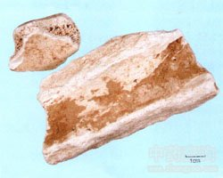

龙骨

拼音
Lónɡ Gǔ
别名
五花龙骨
来源
为古代哺乳动物如象类、犀牛类、三趾马等的骨骼化石。
生境分布
产河南、河北、山西、陕西、山东、内蒙古、湖北、四川、云南、广西、青海等地。
药材特点
由磷灰石、方解石以及少量粘土矿物组成。 1.磷灰石 六方晶系隐晶质，依古代生物骨骼产出。疏松集合体中或有呈晶形小棒状的磷灰石，灰白色。略带油脂状，土状光泽或瓷状光泽。硬度大于指甲，小于小刀。 2.方解石 参见“方解石”条。
性状
药材可分为五花龙骨与龙骨两种：（1）五花龙骨：呈不规则块状，大小不一。表面牙白色，夹有蓝灰色及棕红色花纹，深浅粗细不同，略似大理石的条纹，表面平滑，偶有小裂隙。质硬而脆，易片片剥落而散碎，吸湿性强，以舌舐之有吸力。无臭，无味。五花龙骨质酥脆，出土后，露置空气中极易破碎，常用毛边纸粘贴。（2）龙骨：形似兽骨而较粗大，大小不一。表面灰白色或黄白色，较光滑，有的具纹理与裂隙，或具棕色条纹和斑点。质硬，断面不平坦，色白，细腻如粉质。在关节处膨大，断面有数蜂窝状小孔。吸湿力亦强。无臭，无味。
性味
甘、涩，平。
功能主治
镇静，敛汗涩精，生肌敛疮。用于神经衰弱，心悸，失眠，多梦，自汗，盗汗，遗精，遗尿，崩漏，带下；外用治疮疡久溃不敛。
用法用量
3～8钱；外用适量，研粉敷患处。
化学成分
主要为碳酸钙、磷酸钙，尚含铁、钾、钠、氯、硫酸根等。
药理作用
1：促进血凝：降低血管壁通透性及抑制骨骼肌兴奋作用
摘录
《全国中草药汇编》